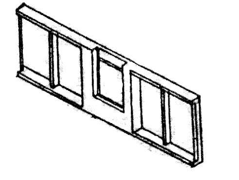
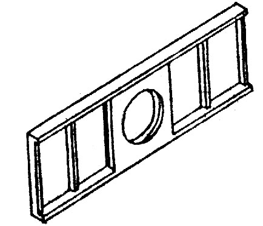

в Бресте:8 (0162) 53 – 16 – 68, 8 (029) 507 – 41 – 20 МТС
в Чернавчицах:8 (0162) 94-54-32, 8 (033) 644 - 54 – 32 МТС
|
Узнать актуальные цены и заказать продукцию можно по телефонам: в Бресте:8 (0162) 53 – 16 – 68, 8 (029) 507 – 41 – 20 МТС в Чернавчицах:8 (0162) 94-54-32, 8 (033) 644 - 54 – 32 МТС |
Оголовки портальные ОП – железобетонные конструкции, представляющие собой плиты прямоугольной формы, которые имеют два прямоугольных углубления для монтажа по бокам и круглое водовыпускное отверстие по центру. К отверстию прикрепляют секции труб, чтобы сформировать выход из трубопровода. Блок ОП монтируется в торце трубчатого канала. С двух сторон от него создают откосные стенки, которые называют «крыльями». Их функция поддерживать откос насыпи, предотвращая обсыпание грунта, и направлять ток воды. Блоку данного типа необходимо выдерживать давление насыпи, мощные водные потоки и деструктивное влияние окружающей среды. Чтобы изделие соответствовало этим критериям, при его создании используют тяжелые сорта бетона, укрепляют арматурным каркасом из стали с целью придания конструкции большей прочности. Наше предприятие производит оголовки двух типов: с закладной рамой для установки затвора, предназначенного для регулирования уровня воды, и без рамы.
|   | |||||
| Марка конструкции | Габаритные размеры, мм | Масса конструкции, кг | |||
|---|---|---|---|---|---|
| L | t | h | d | ||
| ОП-6 | 6000 | 300 | 2000 | 900 | 4225 |
| ОП-6а | 6000 | 300 | 2000 | ||
| ОП-8 | 6000 | 300 | 2000 | 1250 | 3850 |
| ОП-8а | 6000 | 300 | 2000 | 1000 | 4000 |
| ОП-10 | 6000 | 300 | 2000 | 1540 | 3750 |
| ОП-10а | 6000 | 300 | 2000 | 1250 | 3900 |
Бетон тяжелый В25 Рабочая арматура класса АI и АIII Цифры в маркировке обозначают диаметр входного отверстия в дециметрах округленно. Индекс «А» означает отсутствие рамы. Оголовки портальные водопропускных труб используются практически во всех регионах Беларуси. Основная сфера их применения – дорожное строительство (автомобильные и ж/д дороги), оросительные, осушительные, водосбросные каналы и другие мелиоративные устройства, где диаметры труб составляют 0,6, 0,8 либо 0,1 м. Блоки ОП стойки к перепадам температур, высокой влажности, способны выдерживать сейсмическую нагрузку, устойчивы почти к любым видам коррозии, Единственное необходимое условие использования – отсутствие агрессивной газовой среды.